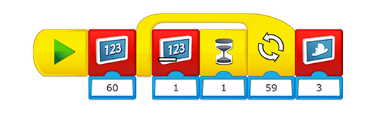

Gebruik deze taak om te evalueren of je leerlingen toepassen wat ze in de vorige taak hebben geleerd.
Programmeerhulp
Een timer instellen
Dit programma telt per seconde af. Om de totale tijd voor deze uitdaging te veranderen, wijzig je het startnummer op het eerste blok en pas je het aantal keren aan dat de herhaling moet aftellen alvorens te stoppen.

Differentiatiemogelijkheden en samenwerking
Je kunt de robotarm op drie verschillende manieren gebruiken:
-
Geef elk team één minuut de tijd om objecten van punt A naar punt B te verplaatsen. De afstand tussen A en B kan variëren (maar kies een afstand van ongeveer één meter). LEGO-stenen zijn zeer geschikte objecten om te verplaatsen, maar in principe zijn alle kleine en lichte voorwerpen te gebruiken.
-
Oefen om preciezer te worden. Houd hiervoor bij hoeveel blokken je in één minuut van punt A naar punt B kunt verplaatsen.
-
Laat de teams samenwerken. Laat het eerste team met de robotarm een potlood pakken, een woord op papier schrijven en het potlood aan de robotarm van het tweede team doorgeven. Het tweede team moet dan hetzelfde woord op papier zetten en het potlood neerleggen.